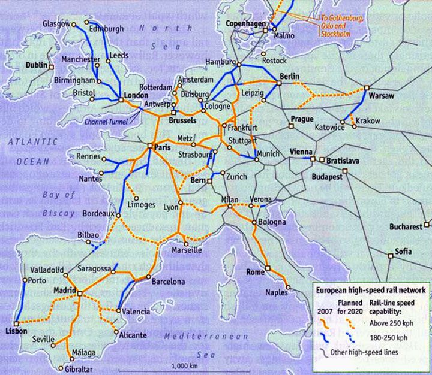

Hello! My name is Daniel Zeng, a rising senior at Northeastern University studying Data Science. I am passionate about leveraging data to make life more convenient for people by providing valuable insights to colleagues who can collaborate with me to make real change. I was fortunate to participate in a formative experience—studying abroad during my first year of university in the Global Scholars Program. Learning to live in the Bay Area and Europe generally not only broadened my cultural perspective but also honed my rapid adaptability and effective communication skills.
I have taken coursework that allowed me to work with all things data, whether that be databases, data analysis, and machine learning in Python and SQL. Currently I am also learning web development and data visualization using javascript and html. I became heavily interested in transportation during my time in the Bay Area but more specifically Europe due to the efficient systems on that continent. In the long run, I hope to use my skills to enhance logistics of perhaps the supply chain using data analysis or machine learning. My other main interest is the food industry. I have learned of the deception in this industry, and I hope to maybe also incorporate this into my life.
[Brief description of Project 1]
[Brief description of Project 2]
[Brief description of Project 3]
Email: [zeng.da@northeastern.edu]